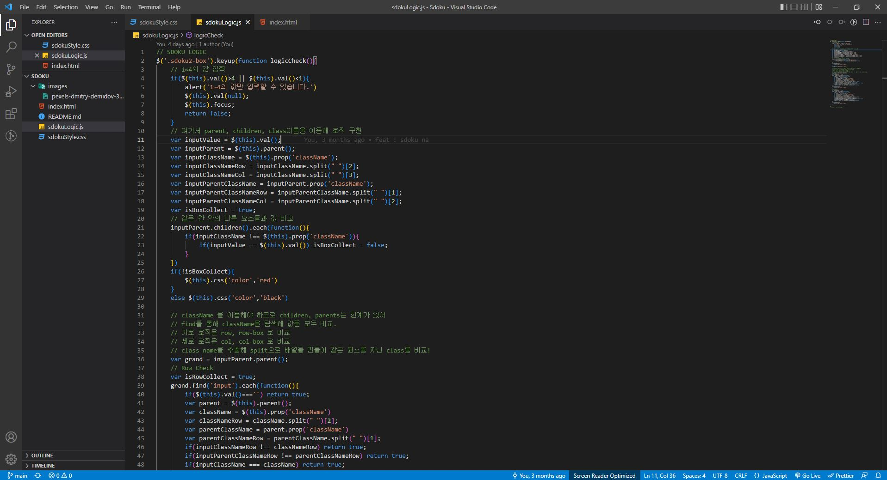
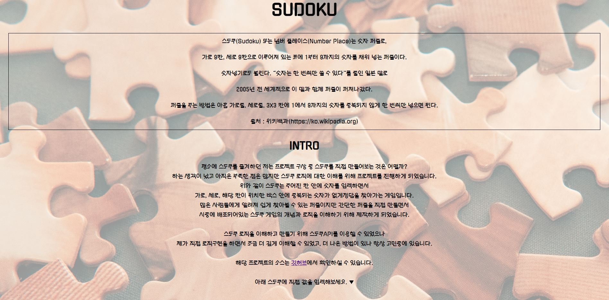

SUDOKU
스도쿠 퍼즐을 만들기 위해 로직을 구현하고, 실제 사용자가 플레이할 수 있도록 싱글페이지를 제작하기 위한 프로젝트입니다.
개발기간은 2022년 5월 약 3일 소요되었고, 깃허브에서 해당 프로젝트 소스를 확인하실 수 있습니다.
깃허브 소스
다음 링크에서 싱글페이지를 확인하실 수 있습니다.
SUDOKU
스도쿠의 각 객체와 배열을 이해하고 JavaScript를 사용해 구현하여 간단한 싱글페이지에 첨부하였습니다.
프로젝트를 진행하면서 대중적으로 사용하기에 부족함이 있고, 3x3, 4x4퍼즐을 추가하지 못한 점, 아직 보완해야할 부분은 많지만
숫자 퍼즐 로직을 이해하는데에 많은 도움이 되었고, 또 다른 퍼즐이나 로직들도 직접 구현하고 싶어졌습니다.
Technologies:
- - HTML5
- - CSS3
- - JavaScript
- - VSCode
Source Code

가로, 세로, 그리고 각 객체(class)에 번호를 부여해 정답을 확인할 수 있도록 JavaScript로 구현하였습니다.
Intro
